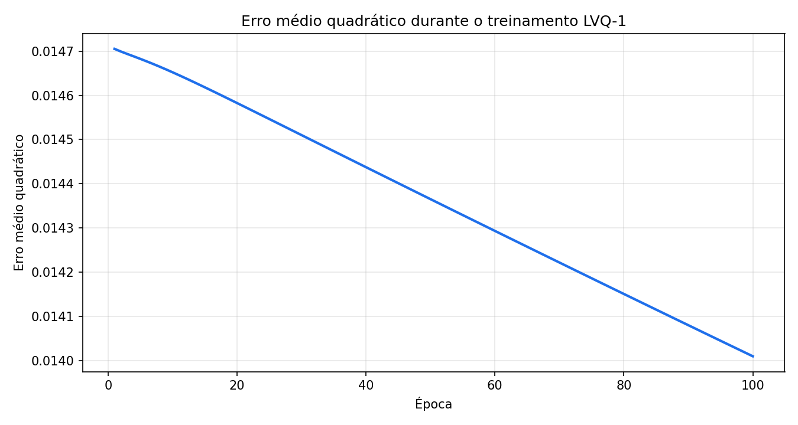
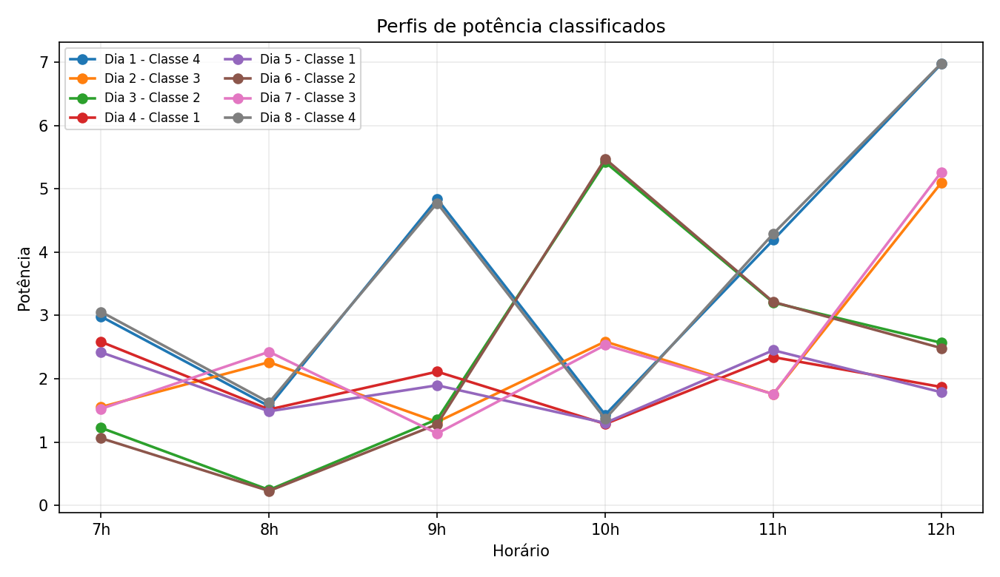

Configuração utilizada
A rede LVQ-1 foi inicializada com o centróide de cada classe como protótipo inicial. Em cada época, o protótipo vencedor é aproximado da amostra quando a classe coincide e afastado quando a classe é diferente. A taxa de aprendizagem inicial foi ..., com decaimento linear ao longo de ... épocas.
Resumo do treinamento
...Épocas
...Erro médio quadrático final
...Acurácia no conjunto de treino
...Classes de demanda

Classificação dos dias de teste
| Dia | 7h | 8h | 9h | 10h | 11h | 12h | Classe prevista | Distância ao protótipo |
|---|---|---|---|---|---|---|---|---|
| Carregando dados... | ||||||||

Resposta
Carregando resposta...